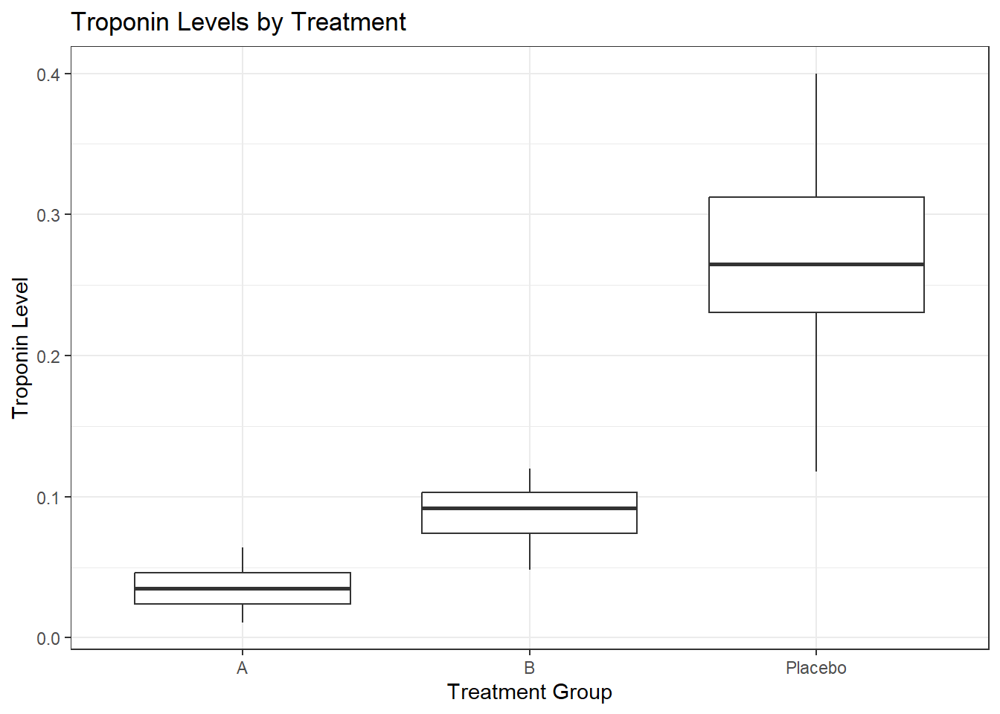

Warning: package 'purrr' was built under R version 4.5.2Warning: package 'ggplot2' was built under R version 4.5.2February 6, 2026
Load the packages.
Warning: package 'purrr' was built under R version 4.5.2Warning: package 'ggplot2' was built under R version 4.5.2# Set a seed for reproducibility
set.seed(234)
# Define the number of observations (patients) to generate
n_patients <- 100
# Create an empty data frame with placeholders for variables
syn_dat <- data.frame(
PatientID = numeric(n_patients),
Age = numeric(n_patients),
Gender = character(n_patients),
TreatmentGroup = character(n_patients),
EnrollmentDate = lubridate::as_date(character(n_patients)),
BloodPressure = numeric(n_patients),
Troponin = numeric(n_patients),
AdverseEvent = integer(n_patients)
)
# Variable 1: Patient ID
syn_dat$PatientID <- 1:n_patients
# Variable 2: Age (numeric variable)
syn_dat$Age <- round(rnorm(n_patients, mean = 60, sd = 10), 1)
# Variable 3: Gender (categorical variable)
syn_dat$Gender <- purrr::map_chr(sample(c("Male", "Female"), n_patients, replace = TRUE), as.character)
# Variable 4: Treatment Group (categorical variable)
syn_dat$TreatmentGroup <- purrr::map_chr(sample(c("A", "B", "Placebo"), n_patients, replace = TRUE), as.character)
# Variable 5: Date of Enrollment (date variable)
syn_dat$EnrollmentDate <- lubridate::as_date(sample(seq(from = lubridate::as_date("2022-01-01"), to = lubridate::as_date("2022-12-31"), by = "days"), n_patients, replace = TRUE))
# Variable 6: Blood Pressure (numeric variable)
syn_dat$BloodPressure <- round(runif(n_patients, min = 90, max = 160), 1)
# Variable 7: Troponin level (numeric variable)
# Option 1: Troponin level is independent of treatment
#syn_dat$Troponin <- round(rnorm(n_patients, mean = 0.10, sd = 0.15), 1)
# Option 2: Troponin is dependent on treatment
syn_dat$Troponin[syn_dat$TreatmentGroup == "A"] <- pmax(round(rnorm(sum(syn_dat$TreatmentGroup == "A"), mean = 0.035, sd = 0.012), 3), 0.001)
syn_dat$Troponin[syn_dat$TreatmentGroup == "B"] <- pmax(round(rnorm(sum(syn_dat$TreatmentGroup == "B"), mean = 0.085, sd = 0.020), 3), 0.001)
syn_dat$Troponin[syn_dat$TreatmentGroup == "Placebo"] <- pmax(round(rnorm(sum(syn_dat$TreatmentGroup == "Placebo"), mean = 0.260, sd = 0.060), 3), 0.001)
# Variable 8: Adverse Event (binary variable, 0 = No, 1 = Yes)
# Option 1: Adverse events are independent of treatment
#syn_dat$AdverseEvent <- purrr::map_int(sample(0:1, n_patients, replace = TRUE, prob = c(0.8, 0.2)), as.integer)
# Option 2: Adverse events are influenced by treatment status
syn_dat$AdverseEvent[syn_dat$TreatmentGroup == "A"] <- purrr::map_int(sample(0:1, sum(syn_dat$TreatmentGroup == "A"), replace = TRUE, prob = c(0.5, 0.5)), as.integer)
syn_dat$AdverseEvent[syn_dat$TreatmentGroup == "B"] <- purrr::map_int(sample(0:1, sum(syn_dat$TreatmentGroup == "B"), replace = TRUE, prob = c(0.7, 0.3)), as.integer)
syn_dat$AdverseEvent[syn_dat$TreatmentGroup == "Placebo"] <- purrr::map_int(sample(0:1, sum(syn_dat$TreatmentGroup == "Placebo"), replace = TRUE, prob = c(0.9, 0.1)), as.integer) PatientID Age Gender TreatmentGroup EnrollmentDate BloodPressure Troponin
1 1 66.6 Female B 2022-04-22 121.6 0.063
2 2 39.5 Female Placebo 2022-09-08 110.3 0.265
3 3 45.0 Female Placebo 2022-05-15 100.4 0.277
4 4 74.7 Male Placebo 2022-09-15 119.8 0.340
5 5 74.6 Male Placebo 2022-06-27 127.7 0.191
6 6 61.4 Female B 2022-11-14 121.6 0.093
AdverseEvent
1 0
2 0
3 0
4 0
5 0
6 0 PatientID Age Gender TreatmentGroup
Min. : 1.00 Min. :29.60 Length:100 Length:100
1st Qu.: 25.75 1st Qu.:53.55 Class :character Class :character
Median : 50.50 Median :61.70 Mode :character Mode :character
Mean : 50.50 Mean :60.04
3rd Qu.: 75.25 3rd Qu.:66.15
Max. :100.00 Max. :81.10
EnrollmentDate BloodPressure Troponin AdverseEvent
Min. :2022-01-03 Min. : 90.5 Min. :0.0110 Min. :0.00
1st Qu.:2022-04-25 1st Qu.:107.0 1st Qu.:0.0480 1st Qu.:0.00
Median :2022-07-15 Median :121.9 Median :0.0930 Median :0.00
Mean :2022-07-06 Mean :123.6 Mean :0.1353 Mean :0.31
3rd Qu.:2022-09-17 3rd Qu.:141.2 3rd Qu.:0.2320 3rd Qu.:1.00
Max. :2022-12-27 Max. :159.8 Max. :0.4000 Max. :1.00 Rows: 100
Columns: 8
$ PatientID <int> 1, 2, 3, 4, 5, 6, 7, 8, 9, 10, 11, 12, 13, 14, 15, 16, …
$ Age <dbl> 66.6, 39.5, 45.0, 74.7, 74.6, 61.4, 62.1, 29.6, 55.1, 4…
$ Gender <chr> "Female", "Female", "Female", "Male", "Male", "Female",…
$ TreatmentGroup <chr> "B", "Placebo", "Placebo", "Placebo", "Placebo", "B", "…
$ EnrollmentDate <date> 2022-04-22, 2022-09-08, 2022-05-15, 2022-09-15, 2022-0…
$ BloodPressure <dbl> 121.6, 110.3, 100.4, 119.8, 127.7, 121.6, 134.4, 107.4,…
$ Troponin <dbl> 0.063, 0.265, 0.277, 0.340, 0.191, 0.093, 0.011, 0.235,…
$ AdverseEvent <int> 0, 0, 0, 0, 0, 0, 1, 0, 1, 0, 1, 0, 0, 1, 1, 0, 1, 1, 0…
A B Placebo
0 11 26 32
1 20 8 3
Df Sum Sq Mean Sq F value Pr(>F)
TreatmentGroup 2 1.0088 0.5044 284.8 <2e-16 ***
Residuals 97 0.1718 0.0018
---
Signif. codes: 0 '***' 0.001 '**' 0.01 '*' 0.05 '.' 0.1 ' ' 1
Call:
lm(formula = Troponin ~ TreatmentGroup, data = syn_dat)
Residuals:
Min 1Q Median 3Q Max
-0.150914 -0.015161 0.000462 0.015059 0.131086
Coefficients:
Estimate Std. Error t value Pr(>|t|)
(Intercept) 0.035161 0.007559 4.652 1.04e-05 ***
TreatmentGroupB 0.053780 0.010451 5.146 1.39e-06 ***
TreatmentGroupPlacebo 0.233753 0.010380 22.520 < 2e-16 ***
---
Signif. codes: 0 '***' 0.001 '**' 0.01 '*' 0.05 '.' 0.1 ' ' 1
Residual standard error: 0.04208 on 97 degrees of freedom
Multiple R-squared: 0.8545, Adjusted R-squared: 0.8515
F-statistic: 284.8 on 2 and 97 DF, p-value: < 2.2e-16
Call:
lm(formula = Troponin ~ TreatmentGroup + Age + Gender + BloodPressure,
data = syn_dat)
Residuals:
Min 1Q Median 3Q Max
-0.15481 -0.01436 -0.00023 0.01403 0.12574
Coefficients:
Estimate Std. Error t value Pr(>|t|)
(Intercept) 3.330e-02 3.888e-02 0.856 0.394
TreatmentGroupB 5.376e-02 1.070e-02 5.023 2.42e-06 ***
TreatmentGroupPlacebo 2.338e-01 1.058e-02 22.108 < 2e-16 ***
Age 1.627e-04 4.696e-04 0.347 0.730
GenderMale 6.875e-03 8.566e-03 0.803 0.424
BloodPressure -9.185e-05 2.175e-04 -0.422 0.674
---
Signif. codes: 0 '***' 0.001 '**' 0.01 '*' 0.05 '.' 0.1 ' ' 1
Residual standard error: 0.04254 on 94 degrees of freedom
Multiple R-squared: 0.8559, Adjusted R-squared: 0.8483
F-statistic: 111.7 on 5 and 94 DF, p-value: < 2.2e-16
Call:
lm(formula = Troponin ~ TreatmentGroup * BloodPressure + Age +
Gender, data = syn_dat)
Residuals:
Min 1Q Median 3Q Max
-0.155029 -0.014499 0.001073 0.014565 0.121596
Coefficients:
Estimate Std. Error t value Pr(>|t|)
(Intercept) 3.947e-03 5.959e-02 0.066 0.947
TreatmentGroupB 5.510e-02 6.584e-02 0.837 0.405
TreatmentGroupPlacebo 3.139e-01 7.137e-02 4.398 2.93e-05 ***
BloodPressure 1.076e-04 3.966e-04 0.271 0.787
Age 2.547e-04 4.768e-04 0.534 0.594
GenderMale 5.505e-03 8.688e-03 0.634 0.528
TreatmentGroupB:BloodPressure -8.076e-06 5.308e-04 -0.015 0.988
TreatmentGroupPlacebo:BloodPressure -6.394e-04 5.652e-04 -1.131 0.261
---
Signif. codes: 0 '***' 0.001 '**' 0.01 '*' 0.05 '.' 0.1 ' ' 1
Residual standard error: 0.0426 on 92 degrees of freedom
Multiple R-squared: 0.8586, Adjusted R-squared: 0.8479
F-statistic: 79.81 on 7 and 92 DF, p-value: < 2.2e-16Analysis of Variance Table
Model 1: Troponin ~ TreatmentGroup
Model 2: Troponin ~ TreatmentGroup + Age + Gender + BloodPressure
Model 3: Troponin ~ TreatmentGroup * BloodPressure + Age + Gender
Res.Df RSS Df Sum of Sq F Pr(>F)
1 97 0.17180
2 94 0.17009 3 0.0017082 0.3138 0.8153
3 92 0.16692 2 0.0031708 0.8738 0.4208 df AIC
m1 4 -344.8713
m2 7 -339.8706
m3 9 -337.7523Across models, Treatment Group was the main predictor of Troponin levels, with Age and Blood Pressure also contributing in more complex models. Group B tended to trend higher, with 0.054 ng/mL higher troponin, and Placebo was 0.234 ng/mL higher comparatively. This means that those taking the placebo have a higher risk of heart attack or injury.
Note: This is a simulated dataset for educational purposes only and does not represent real patient data. Chatgpt-5 mini was used to help generate this code within Positron. All text descriptions are my own.